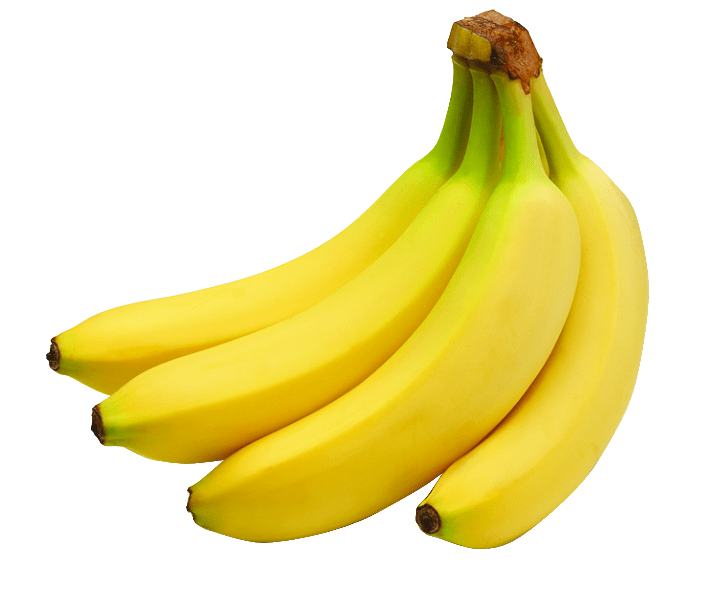

Tentangbuah.com
pisang

Pisang adalah nama umum yang diberikan pada tumbuhan terna raksasa berdaun besar memanjang dari suku Musaceae.
Beberapa jenisnya (Musa acuminata, M. balbisiana, dan M. ×paradisiaca) menghasilkan buah konsumsi yang dinamakan sama.
Buah ini tersusun dalam tandan dengan kelompok-kelompok tersusun menjari yang disebut sisir. Hampir semua buah pisang memiliki
kulit berwarna kuning ketika matang, meskipun ada beberapa yang berwarna jingga, merah, hijau, ungu, atau bahkan hampir hitam.
Buah pisang sebagai bahan pangan merupakan sumber energi (karbohidrat) dan mineral, terutama kalium.
istilah "pisang" juga dipakai untuk sejumlah jenis yang tidak menghasilkan buah konsumsi,
seperti pisang abaka, pisang hias, dan pisang kipas. Artikel ini hanya membahas pisang penghasil buah konsumsi
serta kerabatnya yang berkaitan.
Khasiat Pisang
- Sumber energi
- Baik ibu hamil
- Mengatasi anemia
- Mengatasi penyakit usus dan perut
- Menyembuhkan luka bakar
- Manfaat bagi diabetes
Daftar Harga
| Jenis Pisang | Harga | |
|---|---|---|
| Per Kilo | Per Biji | |
| Pisang Ambon | 40.000 | |
| Pisang Kepok | 30.000 | |
| Pisang Susu | 10.000 | |
| Pisang Mas | 17.000 | |